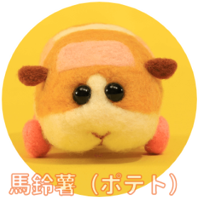
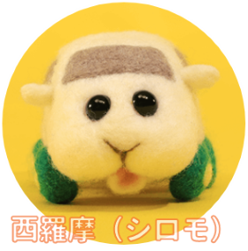
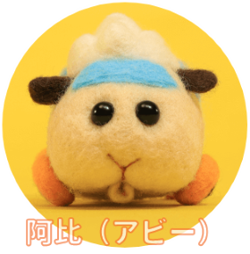
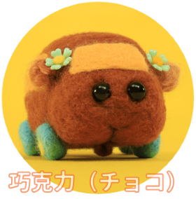
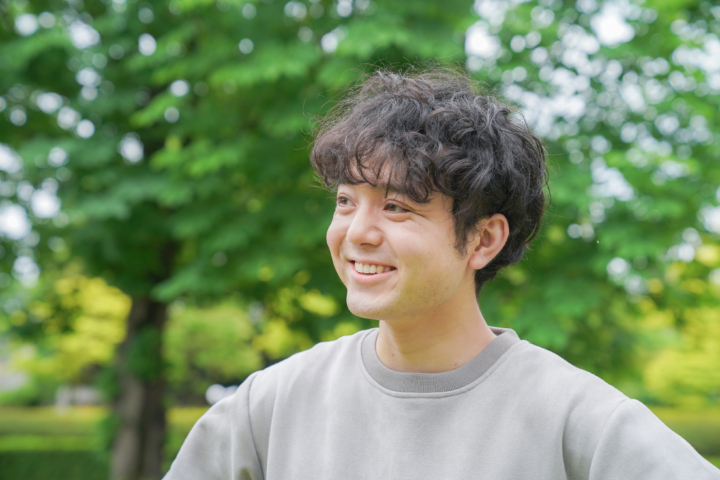

故事大綱
舞台為天竺鼠變成車的世界。圓滾滾的眼睛與大大的圓潤屁屁、短手短腳的小碎步，總是一臉呆呆地跑來跑去的《天竺鼠車車》。圍繞著車子特有的各種場景，有療癒、有友情、有冒險、有亂七八糟軟綿綿的超多車車動畫！
本作是以羊毛氈製作的角色拍攝而成的逐格動畫。聲優則是真正的天竺鼠！
2021年在東京電視的《Kinder TV》頻道開播後，以嶄新的世界觀及可愛的角色、媲美好萊塢電影的生動畫面風靡大人小孩。播出後的迴響不只在日本，也在全世界掀起了車車熱潮。
車車介紹

個性悠哉，但也有無視司機駕駛的一面。若是出現需要幫助的人，有著無論甚麼狀況都會挺身而出的勇氣。喜歡紅蘿蔔。

具有比一般天竺鼠還膽小的性格。會向溫柔的駕駛撒嬌，常被捲入各種麻煩之中。喜歡生菜。

認真且好奇心旺盛。標註著新手記號，夢想著有朝一日能畢業。有著比其他的天竺鼠還要高的自尊心。害怕貓咪。

爽朗又賢淑、卻有著意想不到的強而有力的體能。喜歡打扮也重視時尚。夢想是成為No.1的高級天竺鼠車車。

總之就是什麼都吃、什麼都不怕的活潑女孩兒。總有驚人之舉的麻煩製造車，讓大夥兒相當頭疼。
導演介紹

見里 朝希
1992年東京都出生。2016年武藏野美術大學造型學部 視覺傳達設計學科畢業、2018年東京藝術大學 大學院映像研究科動畫專攻修畢。
大學院時發表的畢業作品《My Little Goat》除了榮獲「SHORT SHORTS FILM FESTIVAL & ASIA2019」日本部門優秀賞、「法國PIFFF電影節」大賞之外，在阿根廷、摩洛哥、德國、波蘭等國內外的國際電影．動畫祭屢獲殊榮。是備受期待的年輕偶動畫師。
執導過的商業作品有《けだまのゴンじろー》(2019年/東京電視)的片尾動畫。本作「PUI PUI 天竺鼠車車」為他首次執導的分集電視動畫。
個性悠哉，但也有無視司機駕駛的一面。若是出現需要幫助的人，有著無論甚麼狀況都會挺身而出的勇氣。喜歡紅蘿蔔。
具有比一般天竺鼠還膽小的性格。會向溫柔的駕駛撒嬌，常被捲入各種麻煩之中。喜歡生菜。
認真且好奇心旺盛。標註著新手記號，夢想著有朝一日能畢業。有著比其他的天竺鼠還要高的自尊心。害怕貓咪。
爽朗又賢淑、卻有著意想不到的強而有力的體能。喜歡打扮也重視時尚。夢想是成為No.1的高級天竺鼠車車。
總之就是什麼都吃、什麼都不怕的活潑女孩兒。總有驚人之舉的麻煩製造車，讓大夥兒相當頭疼。
見里 朝希
1992年東京都出生。2016年武藏野美術大學造型學部 視覺傳達設計學科畢業、2018年東京藝術大學 大學院映像研究科動畫專攻修畢。
大學院時發表的畢業作品《My Little Goat》除了榮獲「SHORT SHORTS FILM FESTIVAL & ASIA2019」日本部門優秀賞、「法國PIFFF電影節」大賞之外，在阿根廷、摩洛哥、德國、波蘭等國內外的國際電影．動畫祭屢獲殊榮。是備受期待的年輕偶動畫師。
執導過的商業作品有《けだまのゴンじろー》(2019年/東京電視)的片尾動畫。本作「PUI PUI 天竺鼠車車」為他首次執導的分集電視動畫。